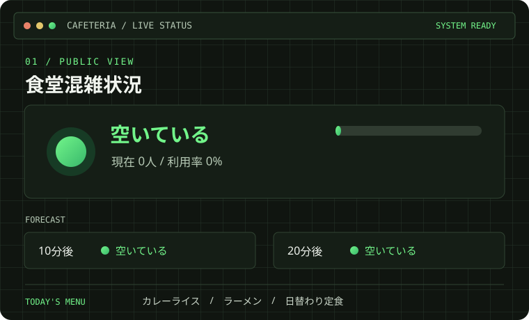
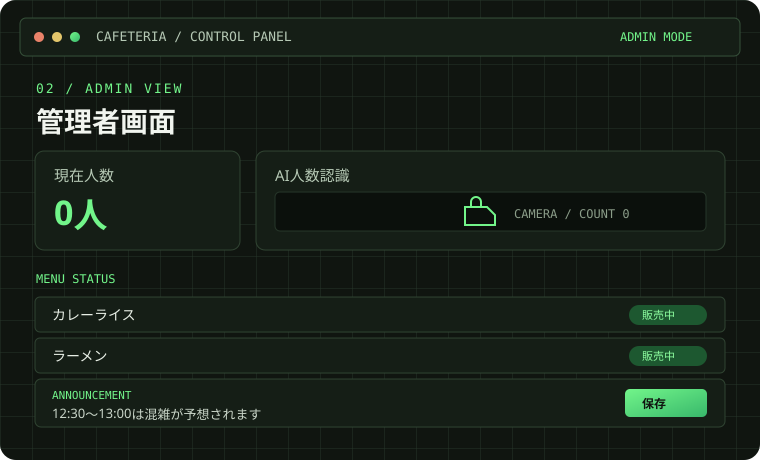

PROJECT / 001 — WEB APPLICATION
食堂混雑状況
確認サイト.
食堂の混雑状況を見える化するWebアプリです。JavaScriptとSupabaseを使い、2026年11月のハッカソン展示に向けて制作しています。
JavaScriptSupabaseHTML / CSS
01 / SCREEN OVERVIEW
画面イメージ
ポートフォリオの配色に合わせ、利用者向けと管理者向けの機能をコンパクトにまとめました。


実際の機能構成をもとにしたSVG再現図です。人数や表示内容はレイアウト例です。
02 / OVERVIEW
概要
食堂の混雑状況を利用者が確認できるようにするWebアプリです。利用者向けページでは現在の混雑度や少し先の予測、メニュー、お知らせを表示します。
03 / DEVELOPMENT
取り組んでいること
- 混雑状況と10分後・20分後の予測を伝える画面づくり
- 現在人数とAI人数認識の結果を管理画面で確認
- メニューの販売状況やお知らせを管理画面から更新
- JavaScriptとSupabaseを使ったデータ連携
04 / NEXT STEPS
これから
展示に向けて実際のデータ連携や各画面の動作を確認し、利用者が混雑状況をひと目で把握できるよう改善します。